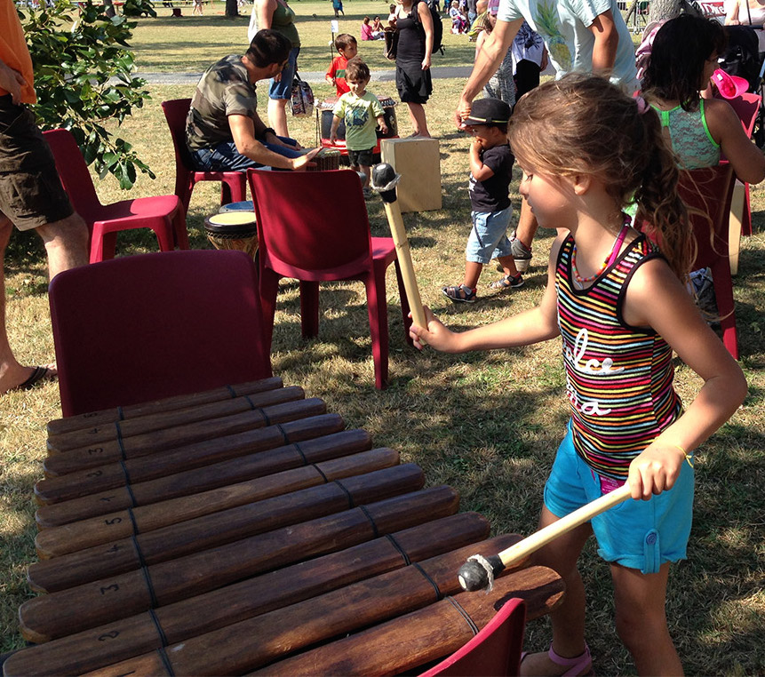

«La musique est un jeu d’enfant»
François Delalande.
Erik, animations musicales et visuelles pour les enfants de la Réunion
Animations
EriK propose aux festivals, aux écoles, aux centres de loisirs, les projets «impressions d’orchestre» ou «comment apprendre à communiquer par la musique en jouant à plusieurs, en orchestre, sans connaissance préalable d’un instrument». ! Au cours d’une heure de découverte, d’une journée d’expérimentation, d’un stage d’une à deux semaines de création, avec un petit groupe, un groupe de vie, une ou deux classes, il s’agit de concevoir une production musicale qui peut prendre la forme d’un spectacle ou d’une vidéo. Erik accompagne et dirige les enfants pendant la représentation.
Démarche: Exploration d’un instrumentarium extrêmement riche en instruments du monde à travers de nombreux jeux musicaux : Jeux d’écoute, de consignes, d’improvisation, de rythmes, de re-création. Création collective de petites pièces musicales en structurant les idées individuelles des enfants. Mise en espace d’un spectacle groupant les créations, ou tournage de vidéo clips. Un thème peut servir de support : Un album lu en classe, un conte écrit par les enfants, une poésie, un pays, une couleur, une danse, une œuvre musicale, ... plus précisemment: Musiques du monde, lié aux nombreuses chansons qui voyagent écrites par EriK. Musique et Mer, lié aux nombreuses chansons marines écrites par EriK. Musique et Nature/Ecologie, lié au conte musical “Animôme” qu’EriK peut interpréter en solo. Musique et Peinture, lié au spectacle “La bergère endormie”. Musique et développement durable, avec objets de recuperation transformés en instruments de musique. Musique et Astronomie, à cause de l’éclipse totale du 1er septembre 2016, et que c’est une autre passion d’Erik. Musique et esprit coopératif, parce que la musique est un formidable vecteur de dynamique de groupe!

-
Contactez-moi

-
Aimez-moi

-
Suivez-moi